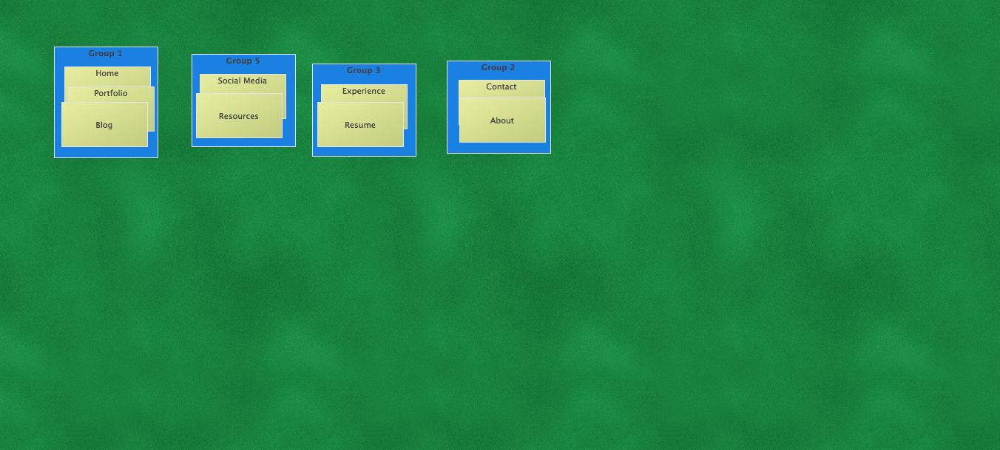
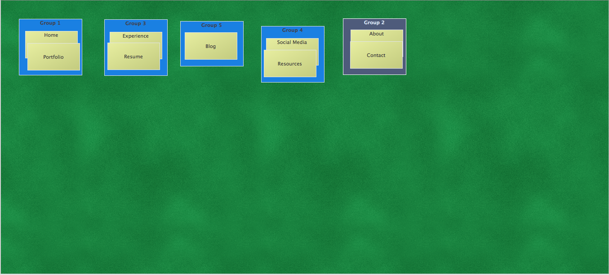
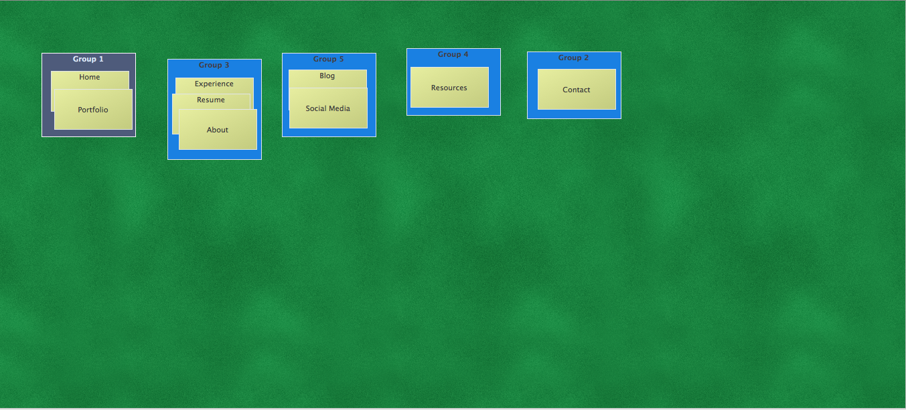
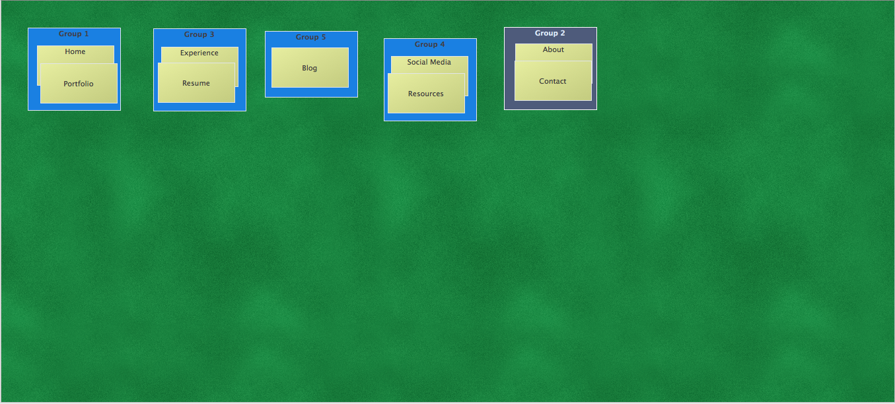
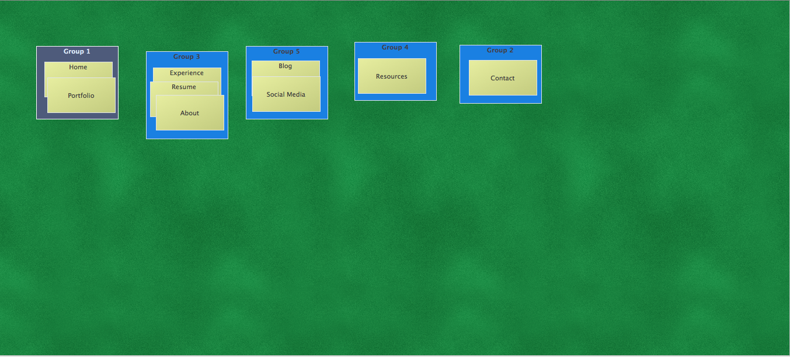

Card Sorting—Final
Card Sort with Me
I want to do an extensive personal site for my final project; something that is professional and displays my work, experience, and more. I want something for my portfolio and some place I can create a blog and post various resources and inspiration.
My sort was similar to the other sorters, except that I place the portfolio and blog on the Home page. I wanted to highlight social media and resources as its own page to show my involvement in the design community. I want to create an responsive HTML resume with an option to print out a designed PDF version. Contact and About are fairly standard pages that I thought I needed, but might end up moving that to the footer or something else.
Card Sort with 3 Others
The three people I had do the card sort of my personal website had fairly standard layouts of a personal portfolio website. Some had the portfolio on the Home page, while another had it separate. Similarly, most grouped Experience, Resume, and About together and had the Blog on its own page. This sort was easier than the other because there is less information.
 


